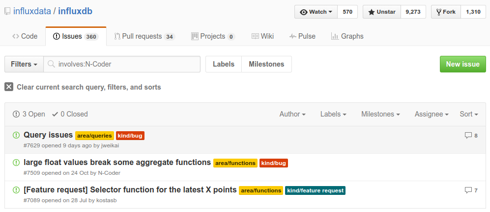

InfluxDB and Grafana
Christian Gorenflo and Niko FinkWaterloo, 2016-11-23
Why InfluxDB?
| InfluxDB | MySQL |
|---|---|
Time Series DBMS 
|
Relational DBMS  ©
Neo4j
©
Neo4j
|
| Schema-Free | Static Schema |
| Int, Float, String, Bool | various different data types |
| No Transactions | Full ACID |
| InfluxDB | MySQL |
|---|---|
| Optimized for Creates and Reads | Good for all CRUD Operations |
| Rows with Timestamps | Rows with Relations |
| Columns can be defined on-the-fly | Schema has to be defined first |
| Missing fields are not saved | Missing fields consume space |
| InfluxDB | kdb+ |
|---|---|
| 10.000 rows/sec | 100.000 rows/sec |
| familiar SQL-like query language | Complicated query language |
| open-source | proprietary |
| big ecosystem of tools | no additional software |
 TICK-Stack
+
TICK-Stack
+
![]() Grafana
Grafana
 © InfluxData
© InfluxData
 © alexanderzobnin
© alexanderzobnin
Data Organization
Line Protocol
<measurement>[,<tag-key>=<tag-value>...]⎵⤦ <field-key>=<field-value>[,<field2-key>=<field2-value>...]⎵⤦ [unix-nano-timestamp]\n
sensor_data,imei=6089⎵⤦ acceleration_x=0.6939569,acceleration_y=0.3649411⎵⤦ 1434067467000000000\n
| measurement | table name |
|---|---|
| tags | secondary indices (strings) |
| fields | values (any type) |
| time | unix timestamp in nanoseconds |
name: sensor_data ----------------- time imei acceleration_x acceleration_y ... 2016-05-06T15:50:48.811Z 6089 0.6939569 0.3649411 ... 2016-05-06T15:50:49.812Z 6089 0.6933582 0.34473312 ... 2016-05-06T15:50:50.815Z 6089 0.6730005 0.34488282 ... 2016-05-06T15:50:51.828Z 6089 0.6836284 0.3466791 ...
Tags vs Fields
- tags are indexed, fields are not
- data on disk is grouped by tags
- too many tags make InfluxDB slow
- only fields can be queried
Querying Data
...with InfluxQLQuery Format
| SELECT | * | [time,][tag_key,...]field_key |
|---|---|
| FROM | measurement,... |
| WHERE | key =|!=|<=|~= 'value'|"key" |
| GROUP BY | tag_key,... |
| LIMIT | count |
Selectors
> SELECT FIRST(source) FROM samples GROUP BY participant name: samples tags: participant=1 time first ---- ----- 2013-05-03T19:44:52Z 5386977 name: samples tags: participant=10 time first ---- ----- 2014-05-29T19:27:28.08Z 5247600
Aggregations
> SELECT MEAN(veh_speed) FROM samples [...] GROUP BY time(10m)
name: samples
tags: participant=1
time mean
---- ----
2013-05-07T21:20:00Z 1.7622126436781609
2013-05-07T21:30:00Z 34.93495879120879
2013-05-07T21:40:00Z 26.179286858974358
2013-05-07T21:50:00Z 14.843560606060606
2013-05-07T22:00:00Z 40.82345744680851
name: samples
tags: participant=10
time mean
---- ----
2014-05-29T19:20:00Z 9.842592592592593
2014-05-29T19:30:00Z 74.25445103857567
2014-05-29T19:40:00Z 62.88461538461539
2014-05-29T19:50:00Z 41.599609375
2014-05-29T20:00:00Z 40.21259842519685
Functions
| Aggregations | Selectors | Transformations |
|---|---|---|
| COUNT() | BOTTOM() | CEILING() |
| DISTINCT() | FIRST() | CUMULATIVE_SUM() |
| INTEGRAL() | LAST() | DERIVATIVE() |
| MEAN() | MAX() | DIFFERENCE() |
| MEDIAN() | MIN() | ELAPSED() |
| MODE() | PERCENTILE() | FLOOR() |
| SUM() | SAMPLE() | HISTOGRAM() |
| STDDEV() | TOP() | MOVING_AVERAGE() |
Python Client
iss4e lib
|
|
~/iss4e.conf
|
script.py
|
Query
config = load_config()
client = InfluxDBClient(**config["drive4data.influx"])
res = client.query("SELECT * FROM samples
GROUP BY participant LIMIT 5;")
for point in res.get_points():
print(point)
# {'time': 3000, 'hv_crnt': 0, 'gps_lat_deg': None, ...}
# {'time': 3009, 'hv_crnt': -3.9, 'gps_lat_deg': None, ...}
# {'time': 3080, 'hv_crnt': -3.9, 'gps_lat_deg': None, ...}
# {'time': 3200, 'hv_crnt': -3.9, 'gps_lat_deg': None, ...}
# {'time': 3890, 'hv_crnt': -3.59, 'gps_lat_deg': None, ...}
# {'time': 4080, 'hv_crnt': None, 'gps_lat_deg': None, ...}
Write
timestamp participant speed soc
2016-11-14 17:20:14 5 0 0.8
2016-11-14 17:21:18 7 20 0.4
2016-11-14 17:22:34 9 0 1.0
...
csv_rows = csv.DictReader(open("samples.csv"))
client.write_points({
'measurement': 'samples',
'time': parse_time(row.pop('timestamp')),
'tags': {
'participant': row.pop('participant')
},
'fields': row
} for row in csv_rows)
Parallelization
executor = ProcessPoolExecutor(max_workers=16)
series = client.list_series("samples")
futures = [executor.submit(my_func, selector)
for tags, selector in series]
data = [f.result() for f in futures]
def my_func(selector):
stream = client.stream_params(
"samples",
fields="veh_speed",
where=selector
)
return np.histogram([
row['veh_speed'] for row in stream
])
InfluxDB internals
and lessons learnt
Data Storage
- insert and read optimized, delete and update slow
-
data is stored in a LevelDB:
· WAL+Cache: fast writes, slow reads
↓ gets compacted into ↓
· TSM-Shards: slow compactions, fast reads
-
data is stored in "dense" per-field columns,
not in sparse rows
...consequences
- row with same time and tags overwrites previous row
-
only fields can be queried and
only tags can (and should) be used for grouping - high series cardinality heavily impacts performance
- collecting data from all series/shards is time consuming
Bugs
- querying across series can be extremely slow
- large float values (~1.8+308) break aggregations
-
when data is inserted in random order,
wrong shards boundaries could be created - ODER BY time DESC was added in 1.2
- most of the functions can't be nested / combined